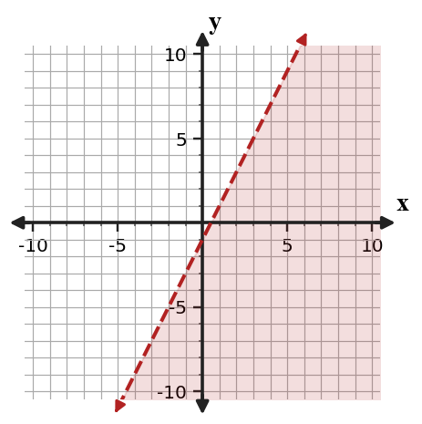

Start with what you can solve independently. Then find different classmates to compare reasoning or help with problems you have not completed. Record your own work and have each partner initial one problem they discussed with you.
Use the graph to name the x-intercepts and decide whether the vertex is above or below the x-axis.

Factor $y=2x^2+6x+4$ and use the factored form to identify the x-intercepts.
A student says the zeros of $y=(x-4)(x+7)$ are $4$ and $7$ because those are the numbers in the factors.
Critique the reasoning and write a corrected explanation.
Create a factored quadratic model for a situation where an object starts on the ground, rises, and returns to the ground after $6$ seconds. Include the equation, the zeros, and a sentence interpreting the zeros.
What does a negative number of tickets in a solution usually tell you about the context?
Why can a graphing check help after solving a system from a context?
For two phone plans, what would the intersection point of their cost graphs represent?
The graph shows a linear inequality. Identify the boundary type and write one possible inequality represented by the graph.

Use the displayed shaded region to write one test point that satisfies the inequality and one that does not. Then explain how you know each point belongs in its category.

Decide whether each point is a solution to $y\ge -x+2$.
| Point | $(0,0)$ | $(2,1)$ | $(-1,5)$ |
|---|---|---|---|
| Solution? |
Estimate the solution before solving: $y=0.5x+1$ and $y=-x+10$. Explain why your estimate should have $x$ between $5$ and $7$, then solve by substitution to verify.
Create an inequality that could model this cafeteria constraint: a tray can hold at most 12 total apples and oranges. Let $a$ be apples and $o$ be oranges.
- Write a linear inequality.
- State what the boundary represents.
- List two feasible whole-number points and one non-feasible point.
In $y=\frac{1}{3} x^2$, identify whether the graph is wider or narrower than $y=x^2$.
Write an equation for a translation of $y=|x|$ with vertex $(-4,6)$. Then explain how the equation shows the move.
A student simplifies $(4x^2+3x-2)-(x^2-5x+6)$ as $3x^2-2x+4$. Critique the error and write the correct simplified expression.
Create a translated absolute value function that has vertex $(3, -2)$ and passes through a point with output $5$. Include the equation, two supporting points, and a short context where the vertex has meaning.